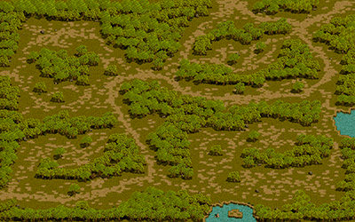

欠片出しってどうやるの？
まず欠片出しとは メインクエスト完了報酬の【鏡の魔法書】をもらう為に行う作業です。
そもそもその 【鏡の魔法書】とはなんぞや、と思う方もいるでしょう。
一言で説明すると、1/3の確率でアイテムを複製 することができるすごーいアイテムです。
では、どうやってそのすごーいアイテムをゲットできるのか？？
 |
|---|
・露天で購入する
・REDSTONEの性向を-100にする
・ロトで入手する
という方法があります。
まずは【性向を-100にする】のお話を。
鏡の魔法書を5本でGETするには・・・
1. メインクエストを完了させる。
2. REDSTONEのかけらを50個集める（かけらを石にする）
3. REDSTONEを地下に7回渡す (善悪値-100になる)
4. REDSTONEを赤い悪魔に渡す（善悪値0になる）
REDSTONEのかけらを50個集めて更新するのに最低1週間は空けないと先に進めません。
つまり、どんなに早く欠片を出そうが善悪値-100にするには最速で2ヶ月かかります。
だからたくさんキャラを作っていっぱい欠片を出して鏡しようぜ！ってことなんですね。
鏡キャラがいっぱいいると...
こんなこともできちゃいます！
かけらの更新は大変ですが、更新日は楽しいですよ。
サブIDを作成し地下キャラを作ろう！
たくさん地下キャラを作りましょう！
※地下キャラとはメインクエを完了してるキャラのこと。
昔と比べてメインクエも簡単になってます。
欠片出しには時間がかかります（１キャラ平均15分）
まずは自分のできる範囲を把握しましょう。
はじめは１ID（１２キャラ）で徐々に増やして行くと良いでしょう。
欠片集めに時間をかけたくない！という方へ
結晶石でかけらに交換してもらう技
欠片出すのめんどくちゃいワ.......
そんな方は交換がおすすめ！利益が出るか出ないかは運次第です！
ギルドホールのNPC「古美術商ネネ」に「結晶石」を渡すことで
「RED STONEのかけら」をランダムで交換してくれるようになりました！！
ギルドホールレベルと、顧客ランクに応じて「結晶石」を渡す数が変わります
【GH1】 9個でランダム
【GH2】 8個でランダム
【GH3】 7個でランダム
【GH4】 6個でランダム
【GH5】 5個でランダム
今日更新して〜来週の欠片交換して〜素材もらって〜再来週の欠片も50個鞄にいれて〜ログハウス！ なんて、楽ちんなこともできるんです！！
欠片は出す！！欠片は自給自足したい派の皆様
欠片を飛ばすキャラを作成する
効率よく欠片を出すなら、 「どの職で狩るか」と「どこの狩場で狩るか」が重要になってきます。
知識ランサー ★★★★★ 5/5
知識獣人 ★★★★ 4/5
知識剣士 ★★★★ 3/5
知識犬 ★★★★ 3/5
どの職も広範囲、低燃費、高火力、スキルの使いやすさが魅力です スキルによって最大範囲に到達するスキルLv数が変わってきます。
※ 総合的に見て、FIランサーが一番オススメ！！ですが、
好きなキャラがいちばん続きます
欠片出し狩場・欠片出し条件
欠片を出すにも、まず条件があります。
・PTを組み、地下キャラをリーダーにする
・欠片出しキャラと連動しているMAPに地下キャラを放置する。
・狩るモンスターは欠片出しキャラのレベル-50以内
基本的には上記の3点になります。
大人の力（課金）（REDSTONE 探索機）
を所持している場合、
地下キャラのレベル-100以内のモンスターまでかけらが飛びます。
基本的には飛ばすキャラが探索機を所持していれば問題ありません。
・探索機１つで１００％のドロップ率がアップ。
・さらにミニ探索機を所持することによってさらに１００％アップになります。
地下キャラが多い人はW探索機を活用しましょう。
探索機を買うと、キャラ数・効率によっては、お得かもしれません。
結晶石でREDSTONEのかけらを50個集める費用＝探索機で自分で集める時間＝効率、
自分にあった道で集めていくといいですね🥰
お勧めの欠片出し狩場紹介
ここからは、お勧めの欠片出し狩場紹介していきます。
レベルによって狩場が変わりますので参考にしてください。
スウェブタワーＢ11
【MOB】Lv420～Lv435 |
隠された収容所
【MOB】Lv500～Lv550 |
ガルカス悪魔軍集結地B1
【MOB】Lv600～Lv625 |
近郊森/妖精たちの安息所
|  |
【MOB】Lv710～Lv735 |
|---|
古代悪魔研究所
【MOB】Lv925～Lv950 |
捨てられた地下墓地B3
【MOB】Lv950～Lv975 |
忘れられた地下収容所B1
【MOB】Lv975～Lv1000 |
情報提供：@shigebis
しげびすさんありです！！